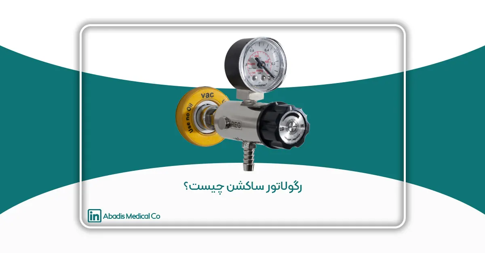
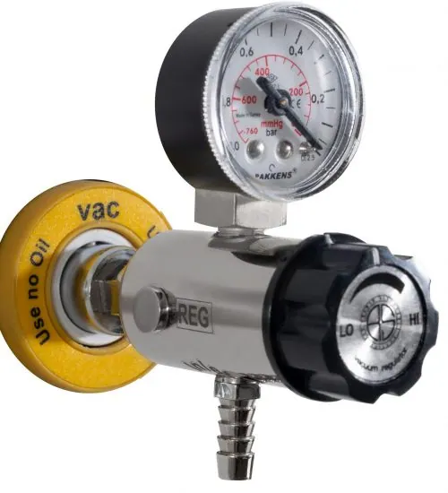
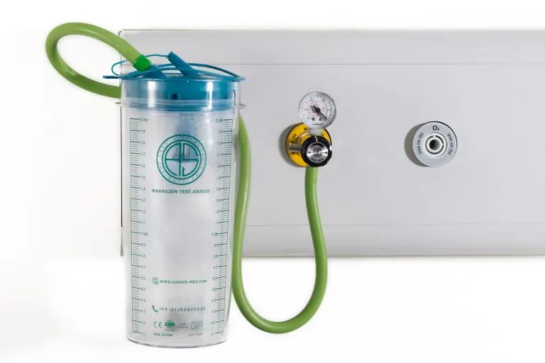
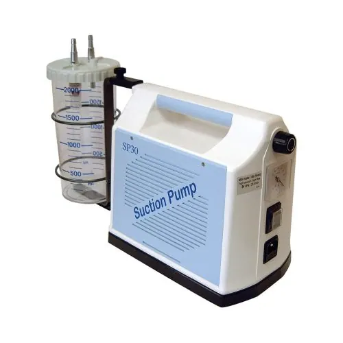

رگولاتور ساکشن چیست؟ آیا تا به حال چنین سؤالی به ذهنتان رسیده است؟ در این مقاله سعی داریم که شما را با این دستگاه به طور کامل آشنا کنیم. در رابطه با ویژگیهای این دستگاه و همچنین نحوه کارکرد آن مطالبی جمعآوری کردهایم که قطعاً برای شما مفید خواهند بود. بنابراین جهت کسب اطلاعات مربوط به رگولاتور ساکشن در این مقاله با ما همراه باشید.

رگولاتور ساکشن (Medical Vacuum System) چه نوع دستگاهی است؟
رگولاتور ساکشن یا تنظیمکننده ساکشن یک دستگاه پزشکی است که به همراه دستگاههای ساکشن سانترال فشار خلأ را تنظیم میکند. این دستگاه خلأ فشار بالا ارائه شده توسط سیستم خلأ مرکزی بیمارستانها را به سطح ایمنی مطلوبی میرساند که برای بیماران قابل استفاده شود.
وکیوم بیمارستانی قدرت بسیار بالایی دارد که ممکن است در بیشتر مواردی که تماس مستقیم دستگاه با بافت انسانی وجود دارد، استفاده نشود. یک دستگاه تنظیمکننده ساکشن یا خلأ، فشار خلأ بالا را از طریق مکانیسم محدودکننده فشار به فشاری مناسب و ایمن کاهش میدهد.
مکانیسم محدودکننده فشار، معمولاً از طریق یک قطعه فنر و جو، برای محدود کردن فشار ساکشن استفاده میکند. اما نکته قابل توجه اینجا است که کادر بیمارستان نباید آن را با یک شیر ساده مانند شیر آب سینک اشتباه بگیرند! مکانیسم محدودکننده فشار را تنظیم کنید که سطح مورد نظر فشار برای شما فراهم شود.
این مکانیسمها با تغییر کشش در فنر و استفاده از اتمسفر برای محدود کردن دستگاه ساکشن به سطح مورد نظر قابل تنظیم میرسند.
تنظیمکنندههای ساکشن (مکش) همچنین مکانیسمهای ایمنی بالینی را به کار میگیرند که منحصر به کاربرد بالینی هستند. علاوه بر مکانیسم محدودکننده فشار، تنظیمکنندههای ساکشن از یک گیج نشاندهنده استفاده میکنند و همچنین به کادر پزشکی اجازه میدهند که فشار مکش اعمال شده به بیمار را تنظیم کنند.
در ادامه پاسخ دادن به سوال “رگولاتور ساکشن چیست؟” باید بگوییم که برخی از تنظیمات به مکانیسمهای ایمنی منحصر به فرد بیشتری نیاز خواهند داشت. به عنوان مثال، هنگام انجام تخلیه مایعات معده، یک عمل متناوب (که در آن ساکشن به طور متناوب اعمال خواهد شد) ساکشن و سپس عکس آن، برای محافظت از پوشش مخاطی معده و افزایش بازدهی مؤثرتر در تخلیه مایعات انجام میشود.
تنظیمکننده ساکشن تقریباً یکی از تجهیزات دستگاهی ضروری در هر بخش از بیمارستان است که در آن بیمارانی وجود دارند! این دستگاهها کاربردهایی حیاتی و گاهی نجاتدهنده را به طور معمول انجام میدهند. این دستگاهها باید قابل اعتماد (با کیفیت) و آسان برای استفاده در مواقع اضطراری، مانند پاکسازی راه هوایی بیماران باشند.
به خصوص بیمارانی که هوایی آلوده تنفس کرده باشند و مشکلات تنفسی یا تنگی نفس برای آنها به وجود آمده است.
قطعات تشکیلدهنده رگولاتورهای ساکشن
در مبحث رگولاتور ساکشن، سؤالی تحت عنوان “این دستگاه چه قطعاتی دارد؟” مطرح خواهد شد. سیستم ساکشن طبی دارای منبع خلأ، گیج خلأ، فیلتر هوا، ظرف جمعآوری مایعات، دستگاه کنترل سرریز، تنظیمکننده خلأ ساکشن، لولههای رابط میانی و لولههای مکش هستند.

عمل مکش با خلأ میتواند گازها، مایعات یا برخی جامدات را از بدن بیماران به خصوص دستگاه تنفسی، معده، سینه، رحم و غیره خارج کند. سیستم ساکشن پزشکی فشار منفی را از قسمت مخزن خلأ ایجاد میکند. همچنین در ادامه تنظیمکننده ساکشن میتواند فشار منفی بین ظرف و لوله مکش را تنظیم کند.
در همان زمان مایعات و جامدات توسط تفاوت فشار در ظرف جمعآوری خواهند شد. علاوه بر این یک دستگاه کنترل سرریز ظروف یا لولهها از ورود مایعات یا جامدات به سیستم ساکشن جلوگیری خواهد کرد. فیلتر هوا بین ظرف و پمپ خلأ نصب میشود که ورود ناخالصیها را به سیستم خلأ مسدود کند.
نحوه کارکرد دستگاه رگولاتور ساکشن
سؤال بعدی که در زمینه رگولاتور ساکشن مطرح خواهد شد، نحوه کار کردن این دستگاه است! فشار دستگاه هنگام کار در شیر تنظیمکننده خلأ تقریباً در محدوده 0 الی 0.075 Mpa قابل تنظیم خواهد بود. البته دبی آن کمتر از 30 لیتر در دقیقه نمیشود.
هنگام تنظیم ظرفیت جذب (ساکشن) مایعات یا ضایعات، شناور شیر تنظیمکننده خلأ میتواند به طور خودکار درگاه ساکشن را ببندد و جذب را متوقف کند. معمولاً دستگاههای ساکشن تنظیمکننده با یک ظرف جمعآوری مایعات ۲ لیتری طراحی میشوند.
برخی از این مخزنها یکبار مصرف بوده و همچنین از کیفیت بسیار بالایی برخوردار هستند! روی برخی از دستگاههای ساخته شده معمولی با آلیاژ برنج مرغوب آبکاری میشود. برخی از این ظرفهای جمعآوری را میتوان آویزان کرد یا روی یک تخت قرار داد.
همچنین میتوان آنها را روی یونیت سر تخت یا براکت ثابت کرد. لولههای ساکشن شلنگهای پلیمری طبی با کیفیت بالا هستند که برای هدایت مایعات طراحی شدهاند. تنظیمکنندههای خلأ همچنین به یک آداپتور (اختیاری) استاندارد متفاوت مجهز هستند. همچنین نصب و اتصالات به سایر سیستمهای پزشکی آسان خواهد بود.
کاربردهای دستگاه رگولاتور در کلینیکها
رگولاتور های ساکشن نقشی حیاتی در مدیریت پزشکی دارند! از حذف یا جلوگیری از خونریزیها در مواقع اضطراری گرفته تا حفظ فشار خلأ مناسب برای ترشحات گوارشی!
تقریباً در هر بخش مراقبت از بیمار در بیمارستانها یا کلینیکها چنین موردهایی بسیار اتفاق میافتد. این دستگاههای رگولاتور ساکشنهای سانترال، فشار گاز را به سطح کاهش یافتهای تبدیل میکنند که برای استفاده بیمار ایمن شوند.
همچنین فشار کل تولید شده توسط سیستم خلأ اولیه را به سطحی مناسب میرسانند که برای کار در اتاق جراحی و دفع گازهای زائد قابل استفاده باشند. رگولاتورها تقریباً برای تمام بخشهای مراقبت از بیمار در بیمارستان ضروری هستند.
اتاقهای عمل، بخشهای مراقبتهای ویژه، اتاقهای اورژانس، اتاقهای ریکاوری و واحدهای کرونری از این دستگاهها بسیار استفاده میکنند.

ساکشن متناوب، پیوسته و کامل به نوع کاربرد بستگی دارد
انواع ساکشن در مبحث رگولاتور ساکشن به شرح ذیل خواهند بود:
- فعالیت ساکشن مداوم، مکش مداوم را در جریان بالا ارائه میدهد. به عنوان مثال میتوان به جمعآوری ترشحات معده از طریق لوله NG یا حفره دهان با این دستگاه اشاره کرد.
- برای جلوگیری از چسبیدن لوله به بافت از مکش متناوب استفاده میشود. هر زمان که یک چرخه ساکشن (روشن یا خاموش شدن) نیاز باشد، در دستگاه گوارش از ستینگ (تنظیمات) ساکشن متناوب استفاده میکنند.
- ساکشن فول لاین، معمولاً خلائی بیشتر از ۵۰۰ میلیمتر جیوه را فراهم خواهد کرد! ساکشن فول لاین در مواقعی که به حداکثر ساکشن نیاز باشد، برای مثال مواقع حیاتی و اضطراری، برای از بین بردن خونریزی قابل توجه یا برای تلاش احیاء بیمار، استفاده میشود.
همچنین میتوان از رگولاتورهای ساکشن برای کاهش آلودگی و پاکسازی دید جراحی در اتاق عمل استفاده کرد. دود جراحی با کمک دستگاه رگولاتور ساکشن تخلیه میشود که آلودگیها را از طریق خروجی مکش جراحی هدایت میکند.
جمعبندی
در این مقاله تلاش کردیم به سوال رگولاتور ساکشن چیست؟ پاسخ دهیم. توضیح دادیم که این وسیله ضروری در علم پزشکی دستگاهی است که فشار خلأ و میزان ساکشن (مکش) را تنظیم میکند. در ادامه نیز به نحوه عملکرد و کاربردهای آن پرداختیم.
این دستگاه مدلهای مختلفی دارد، در بیشتر اتاقهای بیمارستانها برای احیا، جلوگیری از خونریزی و غیره کاربرد دارد. ۳ نوع ساکشن ساخته و تولید شده است که بسته به کاربرد آن، استفادههای متفاوتی خواهند داشت.